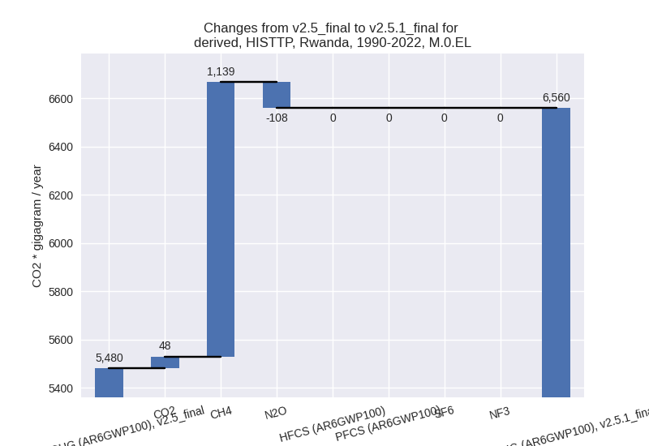

Changes in PRIMAP-hist v2.5.1_final compared to v2.5_final for Rwanda
2024-02-29
Johannes Gütschow
Change analysis for Rwanda for PRIMAP-hist v2.5.1_final compared to v2.5_final
Overview over emissions by sector and gas
The following figures show the aggregate national total emissions excluding LULUCF AR6GWP100 for the country reported priority scenario. The dotted linesshow the v2.5_final data.
The following figures show the aggregate national total emissions excluding LULUCF AR6GWP100 for the third party priority scenario. The dotted linesshow the v2.5_final data.
Overview over changes
In the country reported priority scenario we have the following changes for aggregate Kyoto GHG and national total emissions excluding LULUCF (M.0.EL):
- Emissions in 2022 have changed by 12.7%% (1256.05 Gg CO2 / year)
- Emissions in 1990-2022 have changed by 17.1%% (988.59 Gg CO2 / year)
In the third party priority scenario we have the following changes for aggregate Kyoto GHG and national total emissions excluding LULUCF (M.0.EL):
- Emissions in 2022 have changed by 17.3%% (1402.12 Gg CO2 / year)
- Emissions in 1990-2022 have changed by 19.7%% (1079.37 Gg CO2 / year)
Most important changes per scenario and time frame
In the country reported priority scenario the following sector-gas combinations have the highest absolute impact on national total KyotoGHG (AR6GWP100) emissions in 2022 (top 5):
- 1: 1.B.1, CH4 with 781.31 Gg CO2 / year (1193.6%)
- 2: 1.A, CO2 with 235.04 Gg CO2 / year (13.2%)
- 3: 3.A, CH4 with 192.64 Gg CO2 / year (4.1%)
- 4: 1.B.2, CH4 with 20.61 Gg CO2 / year (5397.9%)
- 5: 4, CH4 with 18.52 Gg CO2 / year (1.9%)
In the country reported priority scenario the following sector-gas combinations have the highest absolute impact on national total KyotoGHG (AR6GWP100) emissions in 1990-2022 (top 5):
- 1: 1.B.1, CH4 with 918.70 Gg CO2 / year (1089.1%)
- 2: 3.A, CH4 with 24.64 Gg CO2 / year (1.0%)
- 3: 1.A, CO2 with 23.16 Gg CO2 / year (2.0%)
- 4: 1.B.1, N2O with 12.18 Gg CO2 / year (1089.1%)
- 5: 1.A, CH4 with 11.26 Gg CO2 / year (2.6%)
In the third party priority scenario the following sector-gas combinations have the highest absolute impact on national total KyotoGHG (AR6GWP100) emissions in 2022 (top 5):
- 1: 1.B.1, CH4 with 781.31 Gg CO2 / year (1193.6%)
- 2: 1.A, CO2 with 365.19 Gg CO2 / year (36.7%)
- 3: 1.A, CH4 with 270.03 Gg CO2 / year (45.0%)
- 4: M.AG.ELV, N2O with -145.27 Gg CO2 / year (-9.6%)
- 5: 3.A, CH4 with 131.52 Gg CO2 / year (6.8%)
In the third party priority scenario the following sector-gas combinations have the highest absolute impact on national total KyotoGHG (AR6GWP100) emissions in 1990-2022 (top 5):
- 1: 1.B.1, CH4 with 918.70 Gg CO2 / year (1089.1%)
- 2: 1.A, CH4 with 204.12 Gg CO2 / year (36.5%)
- 3: M.AG.ELV, N2O with -135.99 Gg CO2 / year (-13.0%)
- 4: 1.A, CO2 with 51.52 Gg CO2 / year (8.4%)
- 5: 1.A, N2O with 19.79 Gg CO2 / year (24.5%)
Notes on data changes
Here we list notes explaining important emissions changes for the country. ’' means that the following text only applies to the TP time series, while means that it only applies to the CR scenario. Otherwise the note applies to both scenarios.
- 1.B.1, CH4: EDGAR 8.0 emissions are over 10 times the emissions in EDGAR 7.0. This leads to over 10x higher emissions in PRIMAP-hist v2.5.1
- 1.B.2, CH4: EDGAR 8.0 emissions are over 50 times the emissions in EDGAR 7.0. This leads to over 50x higher emissions in PRIMAP-hist v2.5.1. The sector is not important for cumulative emissions.
- 1.A, CO2: CDIAC 2023 shows a steep growth of emissions until 2019 which is not present in the EI regional data used in v2.5. Thus emissions in v2.5.1 are higher for recent years. As 2018 is the last year with country reported data this affects the CR and TP time-series.
- 3.A, CH4: New FAO data has higher growth rates starting in 2019. Thus PRIMAP-hist data for the latest years is higher than in v2.5. As the last year with country reported data is 2018 this affects both the CR and TP time-series.
- 1.A, CH4: EDGAR 8.0 data are higher for most years leading to higher emission in PRIMAP-hist for most years.
- M.AG.ELV, N2O: New FAO emissions are lower after 1990 leading to lower emissions in PRIMAP-hist v2.5.1.
Changes by sector and gas
For each scenario and time frame the changes are displayed for all individual sectors and all individual gases. In the sector plot we use aggregate Kyoto GHGs in AR6GWP100. In the gas plot we usenational total emissions without LULUCF. ## country reported scenario
2022
1990-2022
third party scenario
2022
1990-2022

Detailed changes for the scenarios:
country reported scenario (HISTCR):
Most important changes per time frame
For 2022 the following sector-gas combinations have the highest absolute impact on national total KyotoGHG (AR6GWP100) emissions in 2022 (top 5):
- 1: 1.B.1, CH4 with 781.31 Gg CO2 / year (1193.6%)
- 2: 1.A, CO2 with 235.04 Gg CO2 / year (13.2%)
- 3: 3.A, CH4 with 192.64 Gg CO2 / year (4.1%)
- 4: 1.B.2, CH4 with 20.61 Gg CO2 / year (5397.9%)
- 5: 4, CH4 with 18.52 Gg CO2 / year (1.9%)
For 1990-2022 the following sector-gas combinations have the highest absolute impact on national total KyotoGHG (AR6GWP100) emissions in 1990-2022 (top 5):
- 1: 1.B.1, CH4 with 918.70 Gg CO2 / year (1089.1%)
- 2: 3.A, CH4 with 24.64 Gg CO2 / year (1.0%)
- 3: 1.A, CO2 with 23.16 Gg CO2 / year (2.0%)
- 4: 1.B.1, N2O with 12.18 Gg CO2 / year (1089.1%)
- 5: 1.A, CH4 with 11.26 Gg CO2 / year (2.6%)
Changes in the main sectors for aggregate KyotoGHG (AR6GWP100) are
- 1: Total sectoral emissions in 2022 are 3713.61 Gg
CO2 / year which is 33.2% of M.0.EL emissions. 2022 Emissions have
changed by 39.9% (1058.19 Gg CO2 /
year). 1990-2022 Emissions have changed by 54.7% (970.10 Gg CO2 / year). For 2022 the
changes per gas
are:
For 1990-2022 the changes per gas are:
The changes come from the following subsectors:- 1.A: Total sectoral emissions in 2022 are 2834.63
Gg CO2 / year which is 76.3% of category 1 emissions. 2022 Emissions
have changed by 9.5% (245.92 Gg CO2
/ year). 1990-2022 Emissions have changed by 2.1% (35.44 Gg CO2 / year). For 2022 the
changes per gas
are:
For 1990-2022 the changes per gas are:
There is no subsector information available in PRIMAP-hist. - 1.B.1: Total sectoral emissions in 2022 are 858.00
Gg CO2 / year which is 23.1% of category 1 emissions. 2022 Emissions
have changed by 1193.6% (791.67 Gg
CO2 / year). 1990-2022 Emissions have changed by 1089.1% (930.88 Gg CO2 / year). For 2022
the changes per gas
are:
For 1990-2022 the changes per gas are:
There is no subsector information available in PRIMAP-hist. - 1.B.2: Total sectoral emissions in 2022 are 20.99
Gg CO2 / year which is 0.6% of category 1 emissions. 2022 Emissions have
changed by 5397.9% (20.61 Gg CO2 /
year). 1990-2022 Emissions have changed by 632.9% (3.78 Gg CO2 / year). For 2022 the
changes per gas
are:

For 1990-2022 the changes per gas are:
There is no subsector information available in PRIMAP-hist.
- 1.A: Total sectoral emissions in 2022 are 2834.63
Gg CO2 / year which is 76.3% of category 1 emissions. 2022 Emissions
have changed by 9.5% (245.92 Gg CO2
/ year). 1990-2022 Emissions have changed by 2.1% (35.44 Gg CO2 / year). For 2022 the
changes per gas
are:
- 2: Total sectoral emissions in 2022 are 250.53 Gg CO2 / year which is 2.2% of M.0.EL emissions. 2022 Emissions have changed by 0.2% (0.58 Gg CO2 / year). 1990-2022 Emissions have changed by 0.1% (0.07 Gg CO2 / year).
- M.AG: Total sectoral emissions in 2022 are 5926.78
Gg CO2 / year which is 53.1% of M.0.EL emissions. 2022 Emissions have
changed by 3.0% (173.28 Gg CO2 /
year). 1990-2022 Emissions have changed by 0.6% (17.64 Gg CO2 / year). For 2022 the
changes per gas
are:
The changes come from the following subsectors:- 3.A: Total sectoral emissions in 2022 are 4955.53
Gg CO2 / year which is 83.6% of category M.AG emissions. 2022 Emissions
have changed by 3.8% (180.32 Gg CO2
/ year). 1990-2022 Emissions have changed by 0.9% (23.13 Gg CO2 / year). For 2022 the
changes per gas
are:
There is no subsector information available in PRIMAP-hist. - M.AG.ELV: Total sectoral emissions in 2022 are 971.25 Gg CO2 / year which is 16.4% of category M.AG emissions. 2022 Emissions have changed by -0.7% (-7.04 Gg CO2 / year). 1990-2022 Emissions have changed by -1.0% (-5.49 Gg CO2 / year).
- 3.A: Total sectoral emissions in 2022 are 4955.53
Gg CO2 / year which is 83.6% of category M.AG emissions. 2022 Emissions
have changed by 3.8% (180.32 Gg CO2
/ year). 1990-2022 Emissions have changed by 0.9% (23.13 Gg CO2 / year). For 2022 the
changes per gas
are:
- 4: Total sectoral emissions in 2022 are 1227.68 Gg
CO2 / year which is 11.0% of M.0.EL emissions. 2022 Emissions have
changed by 2.0% (24.62 Gg CO2 /
year). 1990-2022 Emissions have changed by 0.1% (0.80 Gg CO2 / year). For 2022 the
changes per gas
are:

- 5: Total sectoral emissions in 2022 are 50.33 Gg CO2 / year which is 0.5% of M.0.EL emissions. 2022 Emissions have changed by -1.2% (-0.63 Gg CO2 / year). 1990-2022 Emissions have changed by -0.0% (-0.02 Gg CO2 / year).
third party scenario (HISTTP):
Most important changes per time frame
For 2022 the following sector-gas combinations have the highest absolute impact on national total KyotoGHG (AR6GWP100) emissions in 2022 (top 5):
- 1: 1.B.1, CH4 with 781.31 Gg CO2 / year (1193.6%)
- 2: 1.A, CO2 with 365.19 Gg CO2 / year (36.7%)
- 3: 1.A, CH4 with 270.03 Gg CO2 / year (45.0%)
- 4: M.AG.ELV, N2O with -145.27 Gg CO2 / year (-9.6%)
- 5: 3.A, CH4 with 131.52 Gg CO2 / year (6.8%)
For 1990-2022 the following sector-gas combinations have the highest absolute impact on national total KyotoGHG (AR6GWP100) emissions in 1990-2022 (top 5):
- 1: 1.B.1, CH4 with 918.70 Gg CO2 / year (1089.1%)
- 2: 1.A, CH4 with 204.12 Gg CO2 / year (36.5%)
- 3: M.AG.ELV, N2O with -135.99 Gg CO2 / year (-13.0%)
- 4: 1.A, CO2 with 51.52 Gg CO2 / year (8.4%)
- 5: 1.A, N2O with 19.79 Gg CO2 / year (24.5%)
Changes in the main sectors for aggregate KyotoGHG (AR6GWP100) are
- 1: Total sectoral emissions in 2022 are 3230.25 Gg
CO2 / year which is 33.9% of M.0.EL emissions. 2022 Emissions have
changed by 84.3% (1477.78 Gg CO2 /
year). 1990-2022 Emissions have changed by 90.3% (1210.08 Gg CO2 / year). For 2022
the changes per gas
are:
For 1990-2022 the changes per gas are:
The changes come from the following subsectors:- 1.A: Total sectoral emissions in 2022 are 2351.27
Gg CO2 / year which is 72.8% of category 1 emissions. 2022 Emissions
have changed by 39.5% (665.50 Gg CO2
/ year). 1990-2022 Emissions have changed by 22.0% (275.42 Gg CO2 / year). For 2022 the
changes per gas
are:
For 1990-2022 the changes per gas are:
There is no subsector information available in PRIMAP-hist. - 1.B.1: Total sectoral emissions in 2022 are 858.00
Gg CO2 / year which is 26.6% of category 1 emissions. 2022 Emissions
have changed by 1193.6% (791.67 Gg
CO2 / year). 1990-2022 Emissions have changed by 1089.1% (930.88 Gg CO2 / year). For 2022
the changes per gas
are:
For 1990-2022 the changes per gas are:
There is no subsector information available in PRIMAP-hist. - 1.B.2: Total sectoral emissions in 2022 are 20.99
Gg CO2 / year which is 0.6% of category 1 emissions. 2022 Emissions have
changed by 5397.9% (20.61 Gg CO2 /
year). 1990-2022 Emissions have changed by 632.9% (3.78 Gg CO2 / year). For 2022 the
changes per gas
are:
For 1990-2022 the changes per gas are:
There is no subsector information available in PRIMAP-hist.
- 1.A: Total sectoral emissions in 2022 are 2351.27
Gg CO2 / year which is 72.8% of category 1 emissions. 2022 Emissions
have changed by 39.5% (665.50 Gg CO2
/ year). 1990-2022 Emissions have changed by 22.0% (275.42 Gg CO2 / year). For 2022 the
changes per gas
are:
- 2: Total sectoral emissions in 2022 are 276.55 Gg
CO2 / year which is 2.9% of M.0.EL emissions. 2022 Emissions have
changed by 0.6% (1.55 Gg CO2 /
year). 1990-2022 Emissions have changed by -5.0% (-4.67 Gg CO2 / year). For 1990-2022
the changes per gas
are:
- M.AG: Total sectoral emissions in 2022 are 3710.40
Gg CO2 / year which is 39.0% of M.0.EL emissions. 2022 Emissions have
changed by -2.0% (-76.21 Gg CO2 /
year). 1990-2022 Emissions have changed by -5.0% (-126.01 Gg CO2 / year). For 2022
the changes per gas
are:
For 1990-2022 the changes per gas are:
The changes come from the following subsectors:- 3.A: Total sectoral emissions in 2022 are 2232.78
Gg CO2 / year which is 60.2% of category M.AG emissions. 2022 Emissions
have changed by 3.6% (76.92 Gg CO2 /
year). 1990-2022 Emissions have changed by 0.6% (8.49 Gg CO2 / year). For 2022 the
changes per gas
are:
There is no subsector information available in PRIMAP-hist. - M.AG.ELV: Total sectoral emissions in 2022 are
1477.62 Gg CO2 / year which is 39.8% of category M.AG emissions. 2022
Emissions have changed by -9.4%
(-153.13 Gg CO2 / year). 1990-2022 Emissions have changed by -12.2% (-134.50 Gg CO2 / year). For 2022
the changes per gas
are:
For 1990-2022 the changes per gas are:
There is no subsector information available in PRIMAP-hist.
- 3.A: Total sectoral emissions in 2022 are 2232.78
Gg CO2 / year which is 60.2% of category M.AG emissions. 2022 Emissions
have changed by 3.6% (76.92 Gg CO2 /
year). 1990-2022 Emissions have changed by 0.6% (8.49 Gg CO2 / year). For 2022 the
changes per gas
are:
- 4: Total sectoral emissions in 2022 are 2248.86 Gg CO2 / year which is 23.6% of M.0.EL emissions. 2022 Emissions have changed by -0.0% (-0.36 Gg CO2 / year). 1990-2022 Emissions have changed by -0.0% (-0.01 Gg CO2 / year).
- 5: Total sectoral emissions in 2022 are 50.33 Gg CO2 / year which is 0.5% of M.0.EL emissions. 2022 Emissions have changed by -1.2% (-0.63 Gg CO2 / year). 1990-2022 Emissions have changed by -0.0% (-0.02 Gg CO2 / year).